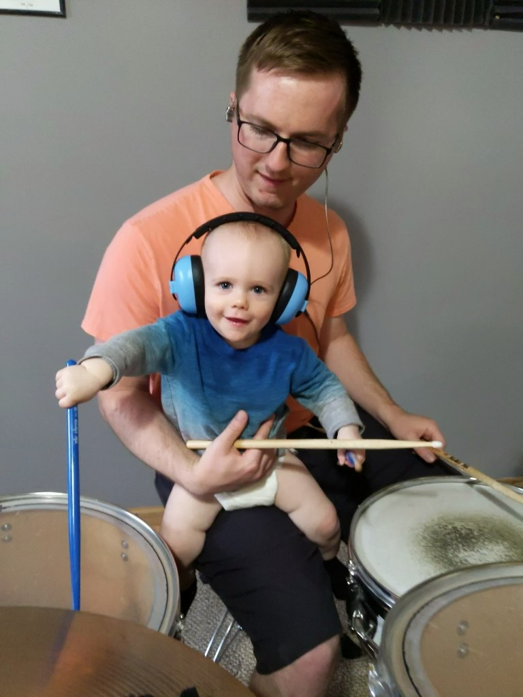

<div @fadeIn class="center-container bg-dvLightGray-50">
  <div class="justify-center w-full p-3">
    <div class="mx-auto mb-3 w-52">
      
    </div>
    <div class="justify-center mb-3">
      <div style="text-align: center;">
        <h1 class="mb-1 name-header">Devin Voss</h1>
        <h1 class="mb-1 title-header">Front-End Software Engineer</h1>
        <div class="flex justify-center gap-2 mx-auto">
          <a href="https://www.linkedin.com/in/devin-voss-18548911a/" target="_blank" title="LinkedIn Profile"></a>
          <a class="nav-link" href="../../assets/resume.pdf" target="_blank" title="Resume">
            <i class="material-icons" style="color: #263238;">
              description
            </i>
          </a>
        </div>
      </div>
    </div>
    <div class="flex">
      <div class="max-w-6xl py-3 mx-auto">
        <p>
          I've been working professionally as a developer since 2015 with a focus in Angular development. I followed along with tutorials in the Angular Beta which was interesting since many tutorials or documentation
          was quickly outdated by changes in syntax prior to the full release. When Angular was released I was ecstatic because everything just clicked for me. I felt like I could learn and develop so much faster
          in the Angular development workflow. Since the release, I piloted adding an Angular 2 application inside of a .NET application for my previous employer and then made the move to LHI so that I could work
          in an environment that was already committed to Angular development.
        </p>
        <br>
        <p>
          This site was created using an NX monorepo with Angular 15, a NestJS backend, and a MongoDB database.
        </p>
        <br>
        <p>
          In my free time I usually watch movies, play the drums, or growing hot peppers! I play tennis, soccer, snow ski, and have a company-wide table tennis championship to my name. I'm married to my wife, Micah, and
          together we raise our two sons, Ridley and Zephyr.
        </p>
      </div>
    </div>
    <div class="flex justify-center gap-1">
      <div>
        
      </div>
      <div>
        
      </div>
    </div>
  </div>
  
</div>